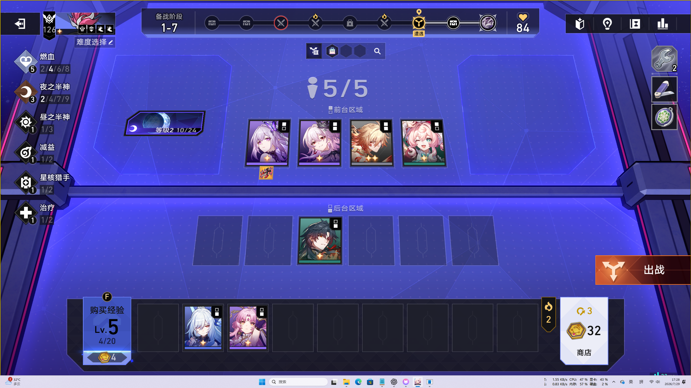
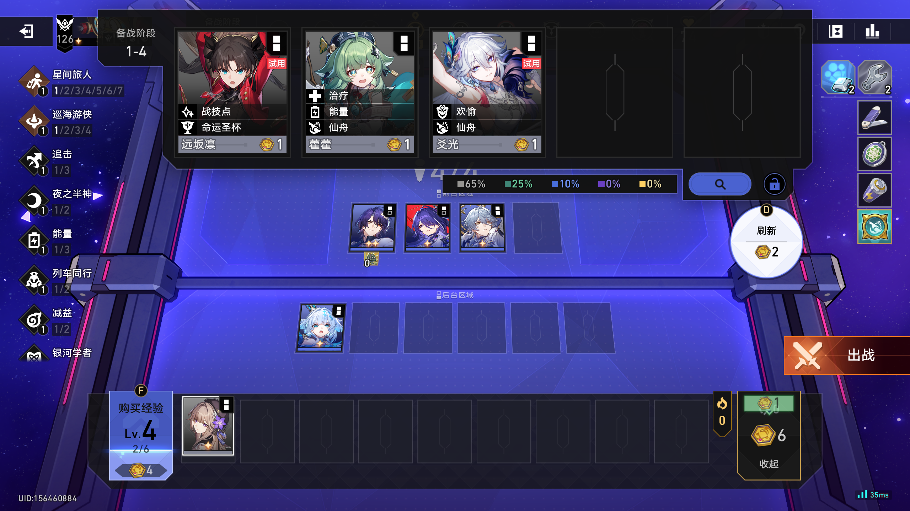
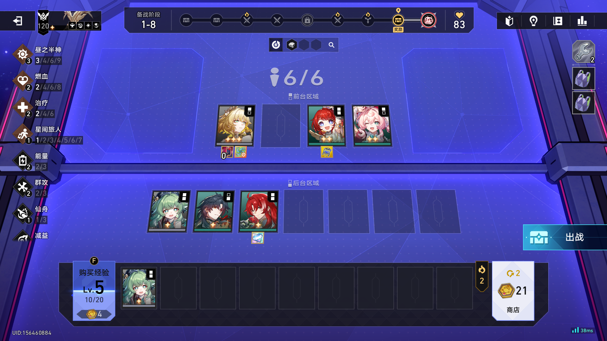
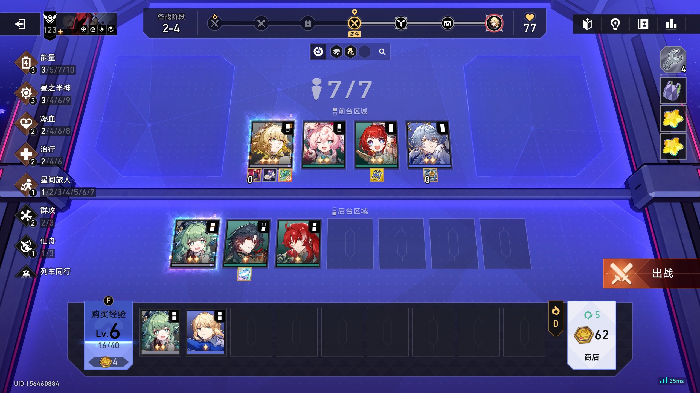
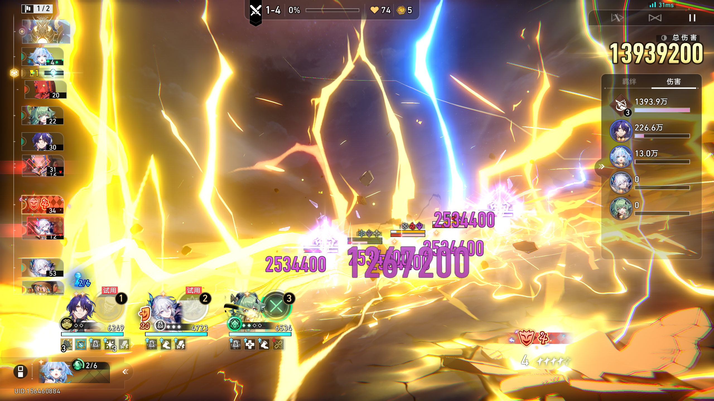
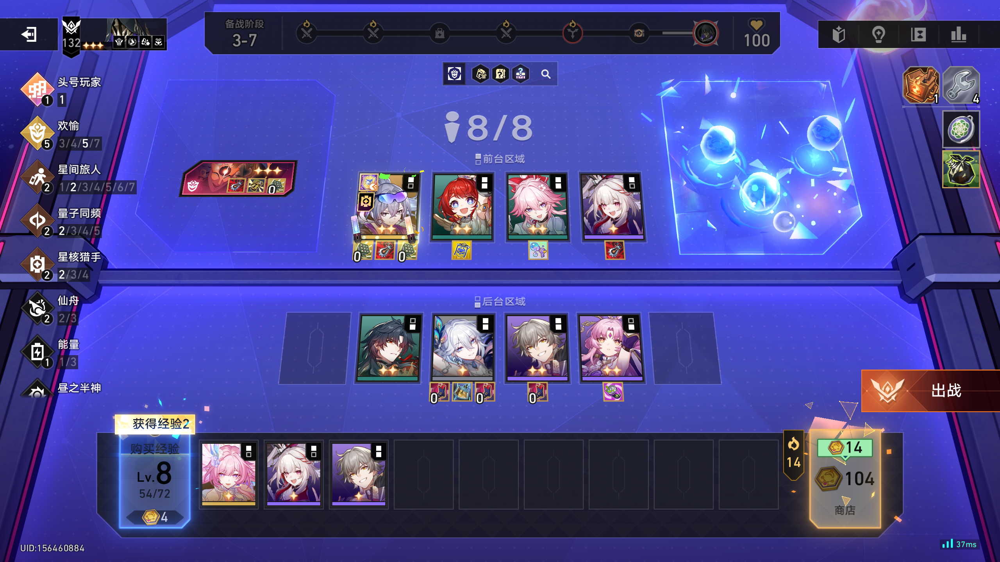

当前失败的 13 项（请逐个看图确认，告诉我你觉得正确的是什么）
① 备战 1-7 画面：装备“候选/待补”为空
图里有个角色（遐蝶）身上穿着一件装备，软件认出了是 杀红眼（置信度 0.95），但它该一并列出的“也可能是杀红眼·特权”候选是空的。
请你确认：图上遐蝶那件到底是不是杀红眼？以及是不是其实更像“杀红眼·特权”？

图片：preparation-1-7-user.png（备战 1-7 实机截图）
② 同一张备战 1-7：有装备却没产生“待补”记录
这张图里，软件认出了装备槽有内容，但没把它登记成“待确认/待补”的条目（影响记录完整度）。请确认这张图上各角色装备情况。
图片：preparation-1-7-user.png
③ 商店界面：普通装备没配上“也是特权版”候选
商店界面（1-4）里角色 真理医生 身上一件装备，软件认出是 火力风暴潮，但没给出“也可能是火力风暴潮·特权”的候选、也没打“非特权”标记。
请确认：真理医生身上那件到底是普通火力风暴潮，还是金色特权版？

图片：preparation-shop-1-4.png（商店界面）
④ 同一张商店图：特权版没被正确打标记
同一商店画面里，软件要正确分辨某件是否特权版并打标记，这一步没判对。请对照③一起看。
图片：preparation-shop-1-4.png
⑤ 展开商店分析：阵容/证据区没保持
商店面板展开时，软件应仍能认出场上阵容 + 紧凑证据区，这里没保持。请看展开后的阵容。
图片：preparation-shop-1-4.png
⑥ 备战帧（图A）：节点/难度对，但“待补先进装备”为空
这张图软件判断是备战界面，节点号和难度都识别对了，但它该报的“待补先进装备”条目是空的。

图片：125924.png
⑦ 备战帧（图B）：同上，节点/难度对，但“待补先进装备”为空
同⑥，这张是 132307 帧（也是性能测试用的那张）。

图片：132307.png
⑧ 战斗 1-4：伤害数值差一位
软件把这张战斗图右上角伤害读成 16,205,013，测试期望 16,335,000。请你确认图上这格伤害到底是多少。

图片：battle-1-4-action-row-obscured.png
⑨ 真实帧 3-7：阵容 + 装备 + 羁绊整体识别
这张 3-7 局的真实画面，软件要认出场上的阵容、装备、羁绊，整体有一处没对上。请看场上各角色和装备。

图片：prep_3_7_142723217.png（3-7 备战）
⑩ 战斗 1-4 之外还有几个“合成帧”逻辑测试（无对应真实截图）
以下几项是
代码拼出来的合成画面（不是真实截图），用于测软件的逻辑分支，出现失败说明逻辑没走对：
- 结算→备战切换那一下，旧帧没清干净（时序问题）
- 未知单位/特殊单位的“非决策证据”保存问题
这些没有能看图片的原始截图，属于逻辑类问题，我先按文字说明列给你。
合成帧测试，无对应真实截图
⑪ 性能：备战全量识别（最坏情形）2 秒预算仍差一点
同一张备战帧连续全量识别，从原来 6.3 秒优化到 2.9 秒，仍略超 2 秒硬预算。真实连玩时有“画面静止就增量、只补变化”的机制顶着，一般到不了最坏情形。这条主要是性能，不是识别错。
图片：132307.png（性能最坏情形）